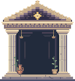

GRECIA ANTICA · UN TEMPO SOSPESO SANTUARIO DI APOLLO

LA PIZIA
Custode dei responsi
IL VELO SI SOLLEVA 02 / 02
«»
Gli dèi sussurrano
La Pizia ascolta. Il tuo responso sta arrivando.
L'ORACOLO HA PARLATO02 / 02
«»
In caso di pericolo immediato, chiama il 112 o chiedi subito aiuto a una persona adulta di fiducia.
Il futuro non è scritto. Il prossimo passo è tuo.
IN ATTESA DI UNA DOMANDANESSUNA MONETA RICHIESTA